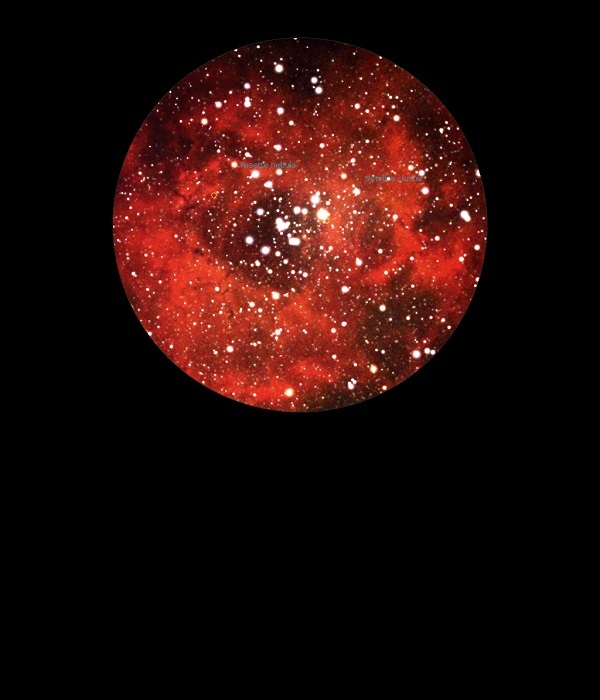

NGC 2244
Open
Cluster in Monoceros
NGC 2244
Mag 4.8
Caldwell 50
09/12/13
Satellite Cluster. A large and bright Open Cluster embedded in
The Rosette Nebula, NGC 2246
Very impressive in 25mm, 18mm and 12mm where it fills the
whole FOV
The Rosette Nebula itself is faint but well defined
08/01/15
Attractive cluster
which looks to
me like a high backed chair with it's 6 or 7 brightest
stars in the centre
With UHC
filter a nice sharp contrast to the dark hole in the
centre of NGC 2246